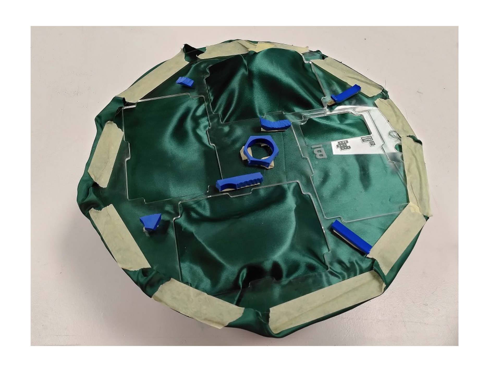

living with your own ideas
2nd to 5th November 2021
faculty: Oscar Tomico, Kristina Andersen, Angella Mackey
week reflections
day 1
magic machine workshop The workshop started with a one minute exercice which was to draw a self portrait. We then folded it, kept it away in our pocket and started making a magical machine that would be useful to the person on the drawing (us). We used discarted material we had found at home, in the fablab or in the street.
the space clock The machine I built looks like a clock but instead of going from "hour to hour", it helps me navigate betweek different spaces and projects. It makes it possible for me in the same "life to :
- Be a farmer, live in the countryside, grow food, spend time with nature,
- Live in the city, be connected to culture and the effervescence of the cities,
- Work on the topics that interest me such as food accessibility, creating new social ties, meeting people from differents backgrounds...
It gives me infinite time to be able to pursue these different interests, I can jump from one environment to the other, from one community to the other without having to give up on something.
The second magic thing happens when I turn the clock. If it starts turning very fast, these different spaces mix together and create a new pattern, unexpected encounters between these "worlds".
collaborative machines We shared the stories of our magic machines with our small group and found that some of them could be combined to create new possibilities : a magical physical space where anything could happen, a machine that invites people in (they could enter the way they want, not necessarily by the door / expected way) and enables sharing (emotions, ideas, gifts...), a guidance machine that amplifies our decisions...
learnings My takeaways from this workshop is that the possibilities of our machines kept changing and evolving the whole time :
- when we were building them : new ideas came up a I was building it and some ideas came also directly from the material I had at hand,
- when we presented our machine to others : each time the story behind it was evolving based on the discussions with others but also just by the act of putting words on something that now existed but had not been described before except a vague idea in our heads,
- when others presented their machines and we started to think of even new possibilities for our own machine or for a new one.
